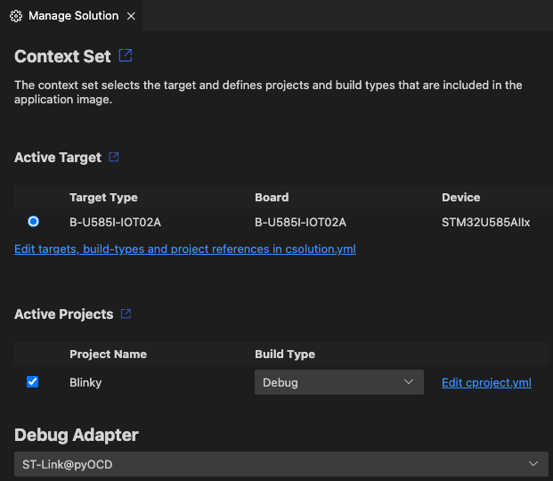

Manage solutions
In the Manage Solution view, you can select the active target, projects and images, and the debug adapter that you are using for target connectivity.
In the CMSIS view, click to open the Manage Solution view:

Active Target
In this section, select the target for build, load, and debug:
- Select the target type that is used for build, run, and debug.
- The target set stores selected projects, images, and debug adapter configuration. If no target set name is
specified, and empty
<default>is used.
To specify your target types by editing the YAML file directly, click Edit csolution.yml.
The status bar shows the current target type@target set (only the target type in case of a <default>
target set):

Projects and images
In this section, select the projects, build types, and additional images that are included in the target set.
- Select the project(s) that are part of the solution.
- Select a build type for each project. You can set different build types for different projects in your solution.
-
Set the load settings:
- Image & Symbols (default): debug adapter loads debug (DWARF) information and project output image.
- Symbols: debug adapter loads only debug (DWARF) information.
- Image: debug adapter loads only project output image.
- None: debug adapter does not use the output, however the project is included in build.
-
Add further images with specific load settgings.
To specify your projects and images by editing the YAML file directly, click Edit cproject.yml.
Note
- If your
*.csolution.ymlfile only includes one project, then you can't deselect it in this dialog as otherwise the solution can't be built. - The projects and build types that you can select are defined by contexts for a particular target. Some options might be unavailable if they have been excluded for the target selected. To learn more about contexts and how to modify them, see the Context and Conditional build information in the CMSIS-Toolbox documentation.
Errors and warnings
You can inspect errors and warnings for a target set. For active projects in the target set, errors and warnings display when you move your cursor over the Target Set in the status bar. The indicator is red for errors and yellow in case of warnings.

Click the indicator to open the Output tab for the CMSIS Solution category. If you previously closed the Manage Solution view, then this action also re-opens the view.
You can also go to the Problems tab and check for errors.
Debug Adapter
A broad range of adapters is supported. Use this drop-down to select the debug adapter that you are using within the target set.
Note
Some of the debug adapters require further setup steps.